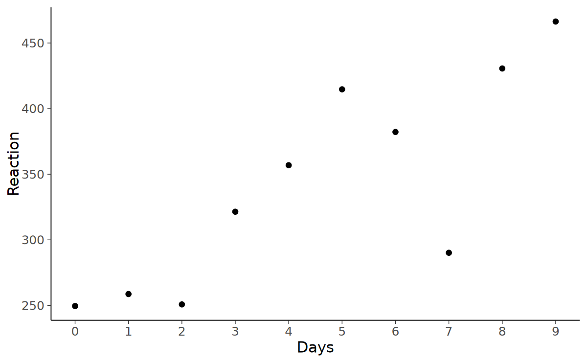
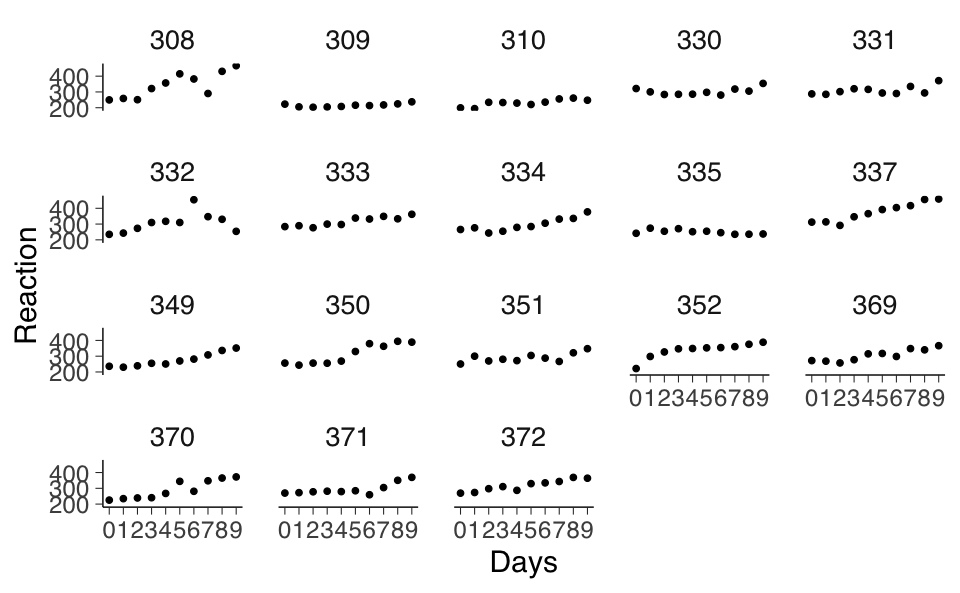
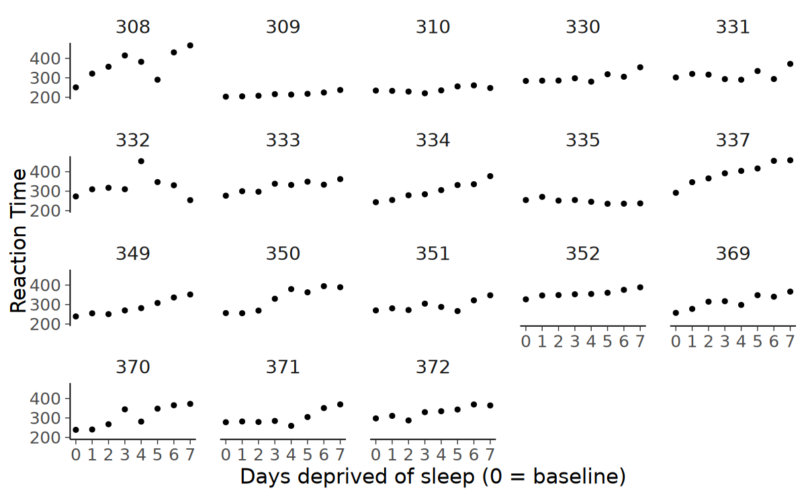
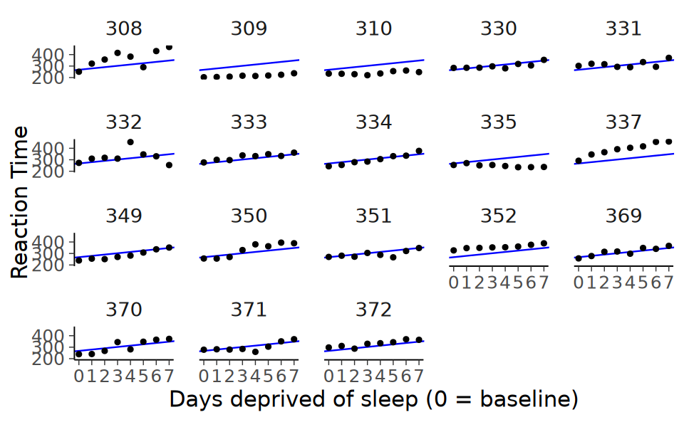
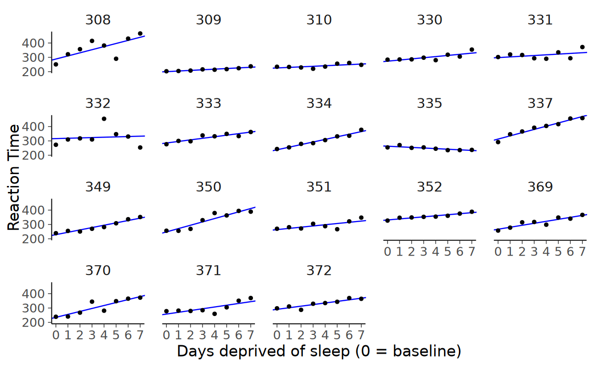
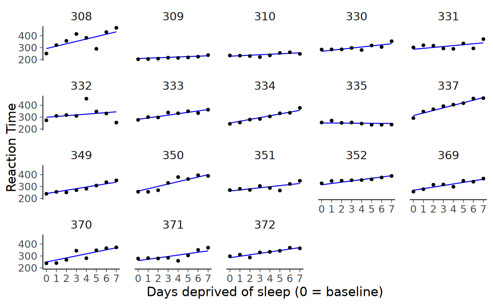
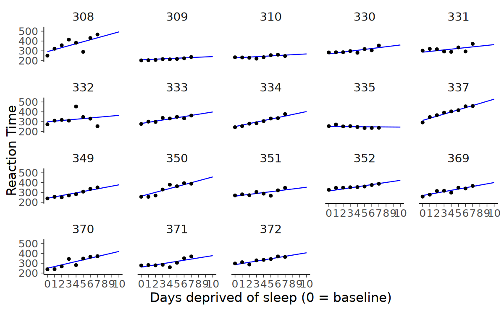

here::here("code", "_common.R") |> source()
# Load packages
pacman::p_load(car, lme4, lavaan, semPlot, repr, kableExtra)14 Modelli multilivello
I modelli multilivello, noti anche come modelli gerarchici o a effetti misti, rappresentano una metodologia statistica potente e flessibile, particolarmente adatta per analizzare dati strutturati in più livelli. Questi modelli permettono di considerare simultaneamente variazioni a livelli diversi, come quello individuale e quello di gruppo, fornendo una comprensione più dettagliata e accurata dei fenomeni studiati.
Prerequisiti
Concetti e Competenze Chiave
Preparazione del Notebook
14.1 Introduzione
In psicologia i modelli multilivello assumono un’importanza cruciale. Gli psicologi utilizzano frequentemente dati raccolti in contesti complessi, dove gli effetti individuali e contestuali si intrecciano. Ad esempio, nella valutazione delle prestazioni cognitive o della risposta emotiva, i modelli multilivello consentono di distinguere tra variazioni dovute a caratteristiche individuali (come l’abilità cognitiva o la personalità) e quelle derivanti da fattori esterni (come l’ambiente scolastico o familiare).
I modelli multilivello sono particolarmente utili per:
- Analizzare dati longitudinali, dove le misurazioni ripetute sugli stessi soggetti introducono correlazioni naturali.
- Studiare l’impatto di fattori contestuali su variabili psicologiche, consentendo di esaminare come l’ambiente influenzi i comportamenti o gli stati mentali.
- Gestire la variabilità intra-individuale e inter-individuale in modo più efficace, offrendo una rappresentazione più realistica della complessità dei fenomeni psicologici.
14.2 Un Esempio Concreto
In questo capitolo, ci focalizzeremo sull’analisi di un’indagine sperimentale condotta per studiare l’impatto della deprivazione del sonno sulle prestazioni psicomotorie. I dati utilizzati provengono dallo studio di Belenky et al. (2003) sugli effetti della deprivazione del sonno.
I dati sono accessibili nel dataset sleepstudy, incluso nel pacchetto lme4 di R (Bates et al., 2014).
data(sleepstudy)Il data frame comprende 180 righe (osservazioni) e tre variabili:
Reaction: Average reaction time (ms)Days: Number of days of sleep deprivationSubject: Subject number on which the observation was made.
Questi dati forniscono un esempio di dati multilivello, caratterizzati da misurazioni ripetute su una stessa variabile dipendente - in questo caso, il tempo medio di reazione (RT) - raccolte dai medesimi partecipanti per un periodo di dieci giorni. Tale struttura di dati è molto diffusa in psicologia, dove spesso si valutano le variazioni delle risposte o dei comportamenti di individui nel tempo.
Il dataset esaminato focalizza su diciotto partecipanti, sottoposti a una condizione di sonno limitato a tre ore. Nell’arco di dieci giorni, questi partecipanti hanno partecipato quotidianamente a un “test di vigilanza psicomotoria” della durata di dieci minuti. Durante il test, era richiesto loro di monitorare uno schermo e di premere un pulsante quanto più rapidamente possibile alla comparsa di uno stimolo. La variabile dipendente principale dello studio è il tempo medio di risposta (RT) di ciascun partecipante.
Per analizzare questi dati, è utile iniziare con una rappresentazione grafica. Se ci concentriamo sui dati di un singolo soggetto, questo ci permette di osservare le tendenze e le variazioni nel tempo di reazione di quel particolare individuo, fornendo insight su come la restrizione del sonno possa influire sulle sue prestazioni nel corso dei dieci giorni dello studio.
just_308 <- sleepstudy |>
filter(Subject == "308")ggplot(just_308, aes(x = Days, y = Reaction)) +
geom_point(size = 2.5) +
scale_x_continuous(breaks = 0:9) 
Esaminiamo ora i dati di tutti i 18 soggetti.
ggplot(sleepstudy, aes(x = Days, y = Reaction)) +
geom_point() +
scale_x_continuous(breaks = 0:9) +
facet_wrap(~Subject)
14.2.1 Descrizione del Disegno Sperimentale
- Fase di Adattamento e Baseline: I primi tre giorni dello studio (T1, T2 e B) sono stati utilizzati per l’adattamento e l’addestramento (T1 e T2), seguiti da una misurazione baseline (B). Durante questo periodo, ai soggetti è stato chiesto di rimanere a letto per 8 ore (dalle 23:00 alle 07:00).
- Condizioni di Sonno: Dal quarto giorno in poi, per sette giorni (E1-E7), i soggetti hanno sperimentato diverse condizioni di sonno, variando la durata del tempo a letto (TIB) da 3 a 9 ore.
I primi due giorni (codificati come 0 e 1) sono stati dedicati all’adattamento e all’addestramento, mentre il terzo giorno (codificato come 2) ha visto la misurazione baseline. L’analisi dovrebbe idealmente partire dal giorno di baseline per riflettere l’effetto della restrizione del sonno sulle prestazioni. Per evitare che l’adattamento influenzi i risultati, i giorni 0 e 1 devono dunque essere esclusi dall’analisi, poiché qualsiasi variazione di prestazione in questi giorni è attribuibile all’addestramento piuttosto che alla restrizione del sonno.
14.2.2 Preparazione dei Dati
- Rimozione delle Osservazioni Iniziali: Dal dataset, eliminiamo le osservazioni dove la variabile
Daysè codificata come 0 o 1. - Creazione di una Nuova Variabile: Creiamo una nuova variabile
days_deprivedbasata suDays, iniziando la sequenza dal giorno 2. In questa nuova variabile, il giorno 2 viene ricodificato come 0, il giorno 3 come 1, e così via. Questa variabile rappresenta il numero di giorni di privazione del sonno. Salviamo il dataset modificato con il nomesleep2, che ora riflette accuratamente il periodo di restrizione del sonno per l’analisi.
sleep2 <- sleepstudy |>
filter(Days >= 2L) |>
mutate(days_deprived = Days - 2L)sleep2 |>
count(days_deprived, Days)| days_deprived | Days | n |
|---|---|---|
| <dbl> | <dbl> | <int> |
| 0 | 2 | 18 |
| 1 | 3 | 18 |
| 2 | 4 | 18 |
| 3 | 5 | 18 |
| 4 | 6 | 18 |
| 5 | 7 | 18 |
| 6 | 8 | 18 |
| 7 | 9 | 18 |
ggplot(sleep2, aes(x = days_deprived, y = Reaction)) +
geom_point() +
scale_x_continuous(breaks = 0:7) +
facet_wrap(~Subject) +
labs(y = "Reaction Time", x = "Days deprived of sleep (0 = baseline)")
14.3 Relazione tra Tempo di Reazione e Privazione del Sonno
Nel contesto dello studio sulla privazione del sonno, l’analisi dei dati suggerisce che, a parte una singola eccezione (il soggetto 335), il tempo di reazione medio tende ad aumentare progressivamente con ogni giorno aggiuntivo di privazione del sonno. Questo pattern indica che potrebbe essere utile descrivere le prestazioni di ciascun partecipante attraverso un modello di regressione lineare.
La regressione lineare è rappresentata dall’equazione generale:
\[ E(Y) = \beta_0 + \beta_1 X, \]
dove \(Y\) è la variabile dipendente (in questo caso, il tempo di reazione), \(\beta_0\) rappresenta l’intercetta (il tempo di reazione medio al giorno zero, prima dell’inizio della privazione del sonno) e \(\beta_1\) è la pendenza (la variazione del tempo di reazione per ogni giorno aggiuntivo di privazione del sonno). Questi parametri (\(\beta_0\) e \(\beta_1\)) sono stimati dai dati.
Quando si modellano i dati di ciascun partecipante, emergono diverse domande: dobbiamo adattare lo stesso modello di regressione lineare a tutti i partecipanti, o sarebbe più appropriato utilizzare un modello diverso per ogni soggetto? Oppure esiste un approccio intermedio che bilancia questi estremi?
Per rispondere a queste domande, esploriamo tre approcci differenti, come illustrato da McElreath (2020):
Complete Pooling: Questo approccio implica l’utilizzo di un unico modello di regressione lineare per tutti i partecipanti. Significa che assumiamo la stessa relazione lineare (stessa intercetta e pendenza) per tutti, ignorando le differenze individuali.
No Pooling: In questo approccio, ogni partecipante ha un proprio modello di regressione lineare individuale, con intercetta e pendenza uniche. Qui si riconosce che ogni individuo può rispondere diversamente alla privazione del sonno, e quindi il modello è personalizzato per ciascun soggetto.
Partial Pooling: Questo approccio intermedio cerca di bilanciare gli estremi dei due metodi precedenti. Include alcuni elementi comuni tra i soggetti (ad esempio, una pendenza media) ma permette anche una certa variazione individuale.
14.4 Complete pooling
L’approccio di “complete pooling” in analisi statistica implica l’utilizzo di un modello che calcola un’unica intercetta e una sola pendenza per l’intero dataset. Questo metodo si basa sull’ipotesi che tutti i soggetti nel dataset condividano le stesse caratteristiche di base riguardo alla relazione tra la variabile dipendente e indipendente.
14.4.1 Caratteristiche del Complete Pooling
- Unicità delle Stime: Il modello stima un singolo set di parametri (intercetta e pendenza) per tutti i dati, considerando l’intero campione come un’unità omogenea.
- Ignorare le Variazioni Individuali: Questo approccio non tiene conto delle possibili differenze individuali nelle intercette o nelle pendenze tra i diversi soggetti. Ad esempio, ignorara come ciascun soggetto reagisce in modo diverso alla privazione del sonno.
14.4.2 Limitazioni dell’Approccio di Complete Pooling
Dall’analisi preliminare dei dati, abbiamo notato che l’approccio di complete pooling potrebbe non essere adatto per il nostro studio. La visualizzazione dei dati suggerisce che ogni partecipante potrebbe avere una propria relazione unica tra il tempo di reazione e i giorni di privazione del sonno, indicando la necessità di valori individuali per le intercette e le pendenze.
14.4.3 Modello di Regressione Lineare in Complete Pooling
Il modello generale lineare (GLM) per l’approccio di complete pooling è formulato come segue:
\[ Y_{sd} = \beta_0 + \beta_1 X_{sd} + e_{sd}, \]
dove:
- \(Y_{sd}\) rappresenta il tempo di reazione medio del soggetto \(s\) nel giorno \(d\).
- \(X_{sd}\) è il numero di giorni di privazione del sonno (variabile
days_deprived), che varia da 0 a 7. - \(e_{sd}\) è il termine di errore, che rappresenta le fluttuazioni casuali non spiegate dal modello.
14.4.4 Implementazione in R
Per adattare questo modello in R, si utilizza la funzione lm():
cp_model <- lm(Reaction ~ days_deprived, sleep2)
summary(cp_model)
Call:
lm(formula = Reaction ~ days_deprived, data = sleep2)
Residuals:
Min 1Q Median 3Q Max
-112.28 -26.73 2.14 27.73 140.45
Coefficients:
Estimate Std. Error t value Pr(>|t|)
(Intercept) 267.97 7.74 34.63 < 2e-16 ***
days_deprived 11.44 1.85 6.18 6.3e-09 ***
---
Signif. codes: 0 '***' 0.001 '**' 0.01 '*' 0.05 '.' 0.1 ' ' 1
Residual standard error: 50.9 on 142 degrees of freedom
Multiple R-squared: 0.212, Adjusted R-squared: 0.207
F-statistic: 38.2 on 1 and 142 DF, p-value: 6.32e-0914.4.5 Interpretazione del Modello di Regressione e Visualizzazione Grafica
Il modello di regressione che abbiamo considerato offre una stima del tempo di risposta medio per i soggetti allo studio al Giorno 0 (prima della privazione del sonno) e la variazione media del tempo di risposta per ogni giorno aggiuntivo di privazione. Secondo questo modello, il tempo di risposta medio iniziale è stimato essere di circa 268 millisecondi, con un incremento medio di circa 11 millisecondi per ogni giorno successivo di privazione del sonno.
14.4.6 Considerazioni sui Limiti del Modello
È importante notare, tuttavia, che questo modello potrebbe avere delle limitazioni nella sua applicabilità:
- Assunzione di Indipendenza: Il modello assume che tutte le osservazioni siano indipendenti. Questa assunzione potrebbe non essere valida nel nostro studio, dato che le osservazioni provengono da misurazioni ripetute sugli stessi soggetti.
- Errori Standard dei Coefficienti: La presunta indipendenza delle osservazioni implica che gli errori standard dei coefficienti di regressione potrebbero non essere completamente affidabili.
14.4.7 Aggiunta delle Previsioni al Grafico
Per visualizzare meglio questi risultati, possiamo aggiungere le previsioni del modello al grafico che abbiamo già creato. Utilizziamo la funzione geom_abline() di R per tracciare la linea di regressione stimata direttamente sul grafico esistente:
- Utilizzo di
geom_abline(): Questa funzione ci permette di aggiungere una linea di regressione al grafico, specificando l’intercetta e la pendenza. - Coefficienti del Modello: Utilizziamo
coef(cp_model)per ottenere i coefficienti di regressione (intercetta e pendenza) dal nostro modello. Questa funzione restituisce un vettore con due elementi corrispondenti all’intercetta e alla pendenza, che possono essere poi utilizzati per definire la linea nel grafico.
In conclusione, l’aggiunta delle previsioni del modello al grafico fornisce una rappresentazione visiva dell’effetto stimato della privazione del sonno sul tempo di risposta. Tuttavia, è essenziale tenere presente le limitazioni e le assunzioni del modello, in particolare l’indipendenza delle osservazioni, che potrebbe non essere una rappresentazione accurata dei dati nel contesto di misurazioni ripetute.
ggplot(sleep2, aes(x = days_deprived, y = Reaction)) +
geom_abline(
intercept = coef(cp_model)[1],
slope = coef(cp_model)[2],
color = "blue"
) +
geom_point() +
scale_x_continuous(breaks = 0:7) +
facet_wrap(~Subject) +
labs(y = "Reaction Time", x = "Days deprived of sleep (0 = baseline)")
Dall’analisi effettuata, emerge che il modello attuale non si adatta in modo ottimale ai dati raccolti. Questa situazione indica la necessità di esplorare un approccio diverso per modellare in modo più accurato le relazioni presenti nei dati.
14.5 Approccio di No Pooling
In alternativa al modello di “complete pooling”, consideriamo l’approccio di “no pooling”. Questo approccio si basa sull’idea di adattare modelli di regressione separati per ogni partecipante, trattando ogni individuo come un’entità distinta.
14.5.1 Caratteristiche del No Pooling
- Indipendenza delle Stime: In questo approccio, ogni partecipante ha il proprio set di stime per l’intercetta e la pendenza. Le stime relative a un partecipante non sono influenzate dalle stime degli altri.
- Stime Individualizzate: Si stima separatamente una coppia di intercetta/pendenza per ciascuno dei 18 partecipanti, riconoscendo la possibilità di variazioni significative nelle risposte individuali.
14.5.2 Implementazione del Modello di No Pooling
Esistono due modi principali per implementare questo approccio:
- Regressioni Separate per Ogni Partecipante: Eseguire una serie di regressioni lineari individuali, una per ogni soggetto.
- Modello di Regressione Unificato con Effetti Principali e Interazione: Utilizzare un unico modello di regressione che includa sia gli effetti principali sia l’interazione tra le variabili
Subject(soggetto) eDay(giorno). Questo metodo permette di includere tutte le stime in un unico modello.
Per il secondo approccio, è necessario considerare le seguenti fasi:
- Creazione di Variabili Dummy per il Fattore
Subject: PoichéSubjectha 18 livelli, saranno necessarie 17 variabili dummy per rappresentare questi livelli. In R, questo può essere fatto automaticamente definendoSubjectcome un fattore. - Includere
Subjectcome Fattore nel Modello: AggiungereSubject, definito come un fattore, come predittore nel modello. L’inclusione dell’interazione traSubjectedays_deprivedpermette variazioni nelle intercette e nelle pendenze tra i soggetti.
14.5.3 Verifica del Fattore Subject
Prima di procedere, è importante assicurarsi che Subject sia definito correttamente come un fattore. Questo può essere verificato utilizzando la funzione summary() in R, che fornisce una sintesi delle caratteristiche della variabile, compreso se è trattata come un fattore.
sleep2 |>
summary() Reaction Days Subject days_deprived
Min. :203 Min. :2.00 308 : 8 Min. :0.00
1st Qu.:265 1st Qu.:3.75 309 : 8 1st Qu.:1.75
Median :303 Median :5.50 310 : 8 Median :3.50
Mean :308 Mean :5.50 330 : 8 Mean :3.50
3rd Qu.:348 3rd Qu.:7.25 331 : 8 3rd Qu.:5.25
Max. :466 Max. :9.00 332 : 8 Max. :7.00
(Other):96 La funzione pull() viene utilizzata per estrarre una specifica colonna da un data frame. Con le seguenti istruzioni verifichiamo se la colonna Subject è codificata come factor.
sleep2 |>
pull(Subject) |>
is.factor()
TRUE
Adattiamo il modello di regressione ai dati. Si noti che la sintassi seguente può essere semplificata utilizzando Reaction ~ days_deprived * Subject.
np_model <- lm(Reaction ~ days_deprived + Subject + days_deprived:Subject,
data = sleep2
)
summary(np_model)
Call:
lm(formula = Reaction ~ days_deprived + Subject + days_deprived:Subject,
data = sleep2)
Residuals:
Min 1Q Median 3Q Max
-106.52 -8.54 1.14 8.89 128.55
Coefficients:
Estimate Std. Error t value Pr(>|t|)
(Intercept) 288.217 16.477 17.49 < 2e-16 ***
days_deprived 21.690 3.939 5.51 2.5e-07 ***
Subject309 -87.926 23.302 -3.77 0.00026 ***
Subject310 -62.286 23.302 -2.67 0.00869 **
Subject330 -14.953 23.302 -0.64 0.52242
Subject331 9.966 23.302 0.43 0.66974
Subject332 27.816 23.302 1.19 0.23522
Subject333 -2.758 23.302 -0.12 0.90600
Subject334 -50.205 23.302 -2.15 0.03342 *
Subject335 -25.343 23.302 -1.09 0.27921
Subject337 24.614 23.302 1.06 0.29319
Subject349 -59.218 23.302 -2.54 0.01246 *
Subject350 -40.202 23.302 -1.73 0.08734 .
Subject351 -24.247 23.302 -1.04 0.30042
Subject352 43.065 23.302 1.85 0.06732 .
Subject369 -21.504 23.302 -0.92 0.35815
Subject370 -53.307 23.302 -2.29 0.02411 *
Subject371 -30.490 23.302 -1.31 0.19350
Subject372 2.477 23.302 0.11 0.91554
days_deprived:Subject309 -17.333 5.570 -3.11 0.00238 **
days_deprived:Subject310 -17.792 5.570 -3.19 0.00184 **
days_deprived:Subject330 -13.685 5.570 -2.46 0.01561 *
days_deprived:Subject331 -16.823 5.570 -3.02 0.00315 **
days_deprived:Subject332 -19.295 5.570 -3.46 0.00076 ***
days_deprived:Subject333 -10.815 5.570 -1.94 0.05480 .
days_deprived:Subject334 -3.575 5.570 -0.64 0.52242
days_deprived:Subject335 -25.899 5.570 -4.65 9.5e-06 ***
days_deprived:Subject337 0.752 5.570 0.13 0.89289
days_deprived:Subject349 -5.264 5.570 -0.95 0.34673
days_deprived:Subject350 1.601 5.570 0.29 0.77438
days_deprived:Subject351 -13.168 5.570 -2.36 0.01987 *
days_deprived:Subject352 -14.402 5.570 -2.59 0.01106 *
days_deprived:Subject369 -7.895 5.570 -1.42 0.15927
days_deprived:Subject370 -1.049 5.570 -0.19 0.85091
days_deprived:Subject371 -9.344 5.570 -1.68 0.09633 .
days_deprived:Subject372 -10.604 5.570 -1.90 0.05961 .
---
Signif. codes: 0 '***' 0.001 '**' 0.01 '*' 0.05 '.' 0.1 ' ' 1
Residual standard error: 25.5 on 108 degrees of freedom
Multiple R-squared: 0.849, Adjusted R-squared: 0.8
F-statistic: 17.4 on 35 and 108 DF, p-value: <2e-16Per chiarire, il soggetto di riferimento è il 308; in R, la modalità predefinita è quella di ordinare i livelli del fattore in ordine alfabetico e di scegliere il primo come soggetto di riferimento. Questo significa che l’intercetta e la pendenza per il soggetto 308 sono rappresentate rispettivamente da (Intercept) e days_deprived, poiché tutte le altre 17 variabili dummy saranno nulle per il soggetto 308.
Tutti i coefficienti di regressione degli altri soggetti sono rappresentati come scostamenti da questo soggetto di riferimento. Se desideriamo calcolare l’intercetta e la pendenza per un dato soggetto, dobbiamo semplicemente sommare gli scostamenti corrispondenti. Pertanto, abbiamo:
Intercetta per 308: 288.217
Pendenza per 308: 21.69
Intercetta per 335: (Intercept) + Subject335 = 288.217 + -25.343 = 262.874
Pendenza per 335: days_deprived + days_deprived:Subject335 = 21.69 + -25.899 = -4.209
E così via.
Nel modello “no pooling”, non viene stimata un’intercetta e una pendenza complessive per l’intera popolazione; in questo caso, (Intercept) e days_deprived sono stime dell’intercetta e della pendenza per il soggetto 308, che è stato scelto (arbitrariamente) come soggetto di riferimento. Per ottenere stime per l’intera popolazione, è possibile procedere con una seconda fase dell’analisi statistica in cui calcoliamo le medie delle intercette e delle pendenze individuali.
coef(np_model) |> as.data.frame()| coef(np_model) | |
|---|---|
| <dbl> | |
| (Intercept) | 288.217 |
| days_deprived | 21.690 |
| Subject309 | -87.926 |
| Subject310 | -62.286 |
| Subject330 | -14.953 |
| Subject331 | 9.966 |
| Subject332 | 27.816 |
| Subject333 | -2.758 |
| Subject334 | -50.205 |
| Subject335 | -25.343 |
| Subject337 | 24.614 |
| Subject349 | -59.218 |
| Subject350 | -40.202 |
| Subject351 | -24.247 |
| Subject352 | 43.065 |
| Subject369 | -21.504 |
| Subject370 | -53.307 |
| Subject371 | -30.490 |
| Subject372 | 2.477 |
| days_deprived:Subject309 | -17.333 |
| days_deprived:Subject310 | -17.792 |
| days_deprived:Subject330 | -13.685 |
| days_deprived:Subject331 | -16.823 |
| days_deprived:Subject332 | -19.295 |
| days_deprived:Subject333 | -10.815 |
| days_deprived:Subject334 | -3.575 |
| days_deprived:Subject335 | -25.899 |
| days_deprived:Subject337 | 0.752 |
| days_deprived:Subject349 | -5.264 |
| days_deprived:Subject350 | 1.601 |
| days_deprived:Subject351 | -13.168 |
| days_deprived:Subject352 | -14.402 |
| days_deprived:Subject369 | -7.895 |
| days_deprived:Subject370 | -1.049 |
| days_deprived:Subject371 | -9.344 |
| days_deprived:Subject372 | -10.604 |
Calcoliamo le intercette individuali:
all_intercepts <- c(
coef(np_model)["(Intercept)"],
coef(np_model)[3:19] + coef(np_model)["(Intercept)"]
)Calcliamo le pendenze individuali:
all_slopes <- c(
coef(np_model)["days_deprived"],
coef(np_model)[20:36] + coef(np_model)["days_deprived"]
)Creiamo un DataFrame con le colonne Subject, intercept e slope:
ids <- sleep2 |>
pull(Subject) |>
levels() |>
factor()
print(ids) [1] 308 309 310 330 331 332 333 334 335 337 349 350 351 352 369 370 371 372
18 Levels: 308 309 310 330 331 332 333 334 335 337 349 350 351 352 ... 372# make a tibble with the data extracted above
np_coef <- tibble(
Subject = ids,
intercept = all_intercepts,
slope = all_slopes
)
print(np_coef)# A tibble: 18 x 3
Subject intercept slope
<fct> <dbl> <dbl>
1 308 288. 21.7
2 309 200. 4.36
3 310 226. 3.90
4 330 273. 8.01
5 331 298. 4.87
6 332 316. 2.40
7 333 285. 10.9
8 334 238. 18.1
9 335 263. -4.21
10 337 313. 22.4
11 349 229. 16.4
12 350 248. 23.3
13 351 264. 8.52
14 352 331. 7.29
15 369 267. 13.8
16 370 235. 20.6
17 371 258. 12.3
18 372 291. 11.1 Esaminiamo l’adattamento di questo modello ai dati.
ggplot(sleep2, aes(x = days_deprived, y = Reaction)) +
geom_abline(
data = np_coef,
mapping = aes(
intercept = intercept,
slope = slope
),
color = "blue"
) +
geom_point() +
scale_x_continuous(breaks = 0:7) +
facet_wrap(~Subject) +
labs(y = "Reaction Time", x = "Days deprived of sleep (0 = baseline)")
Questa situazione è notevolmente migliorata rispetto al modello di pooling completo. Se desideriamo testare l’ipotesi nulla secondo cui la pendenza della retta di regressione è uguale a zero, possiamo farlo eseguendo un test \(t\) di Student sul campione di pendenze individuali.
np_coef |>
pull(slope) |>
t.test()
One Sample t-test
data: pull(np_coef, slope)
t = 6, df = 17, p-value = 1e-05
alternative hypothesis: true mean is not equal to 0
95 percent confidence interval:
7.54 15.33
sample estimates:
mean of x
11.4 Questo test suggerisce che la pendenza media di 11.435 è diversa da zero, t(17) = 6.20 p < .001.
14.6 Approccio di Partial Pooling
Nell’ambito dell’analisi dei dati psicologici, i ricercatori si trovano spesso a dover gestire un delicato equilibrio. Da un lato, vi è l’approccio di complete pooling, che tratta tutti i dati come se appartenessero a un unico gruppo omogeneo, e dall’altro, l’approccio di no-pooling, che considera i dati di ciascun soggetto in modo isolato, senza sfruttare le informazioni aggregate. Entrambi gli estremi hanno limitazioni significative: il complete pooling può mascherare le variazioni individuali, mentre il no-pooling può non sfruttare appieno le informazioni disponibili dall’intero set di dati.
Per superare queste limitazioni, emerge l’approccio di partial pooling. Questo metodo utilizza i modelli lineari a effetti misti, che rappresentano una via di mezzo tra i due estremi menzionati. Il partial pooling permette di trarre vantaggio dalle informazioni provenienti dall’insieme dei partecipanti, migliorando così le stime dei soggetti individuali. Attraverso questo approccio, si ottengono stime che non solo tengono conto delle peculiarità di ciascun individuo ma sono anche informate dalle tendenze generali osservate nel gruppo più ampio.
L’approccio di partial pooling permette di separare più efficacemente le tendenze generali dagli errori casuali in ciascun partecipante e si dimostra più adatto per generalizzare i risultati a una popolazione più ampia, al di là dei soggetti specifici coinvolti nello studio.
14.6.1 Implementazione dei Modelli a Effetti Misti
- Trattare i Soggetti come Fattori Casuali: Nel partial pooling, i soggetti vengono considerati come un fattore casuale anziché fisso. Ciò implica che i livelli del fattore (i soggetti nel nostro caso) sono visti come un campione casuale da una popolazione più ampia.
- Modello Lineare a Effetti Misti: Questo tipo di modello statistico consente di includere i fattori casuali nell’analisi. In un modello misto, le stime per ogni soggetto sono “informate” o influenzate dalle informazioni aggregate degli altri soggetti.
- Shrinkage o Restringimento: Il fenomeno dello shrinkage indica che le stime per ciascun soggetto vengono regolate o “spostate” verso le stime medie della popolazione, permettendo una valutazione più equilibrata e meno influenzata da variazioni estreme o casuali.
14.6.2 Articolazione e Applicazione del Modello Multilivello
Il modello multilivello che analizziamo è strutturato per cogliere le relazioni dinamiche tra variabili a livelli diversi. Esaminiamo i dettagli di ogni livello e il loro significato nel contesto del modello.
14.6.3 Livello 1: Modellazione della Relazione Individuale
Il primo livello del modello esprime la relazione lineare individuale tra la variabile di risposta (tempo di reazione) e i predittori (giorni di privazione del sonno):
\[ Y_{sd} = \beta_{0s} + \beta_{1s} X_{sd} + e_{sd}, \]
dove \(Y_{sd}\) è il tempo di reazione del soggetto \(s\) al giorno \(d\), \(\beta_{0s}\) e \(\beta_{1s}\) sono i parametri individuali di intercetta e pendenza, e \(e_{sd}\) rappresenta l’errore per ogni soggetto e giorno. I parametri \(\beta_{0s}\) e \(\beta_{1s}\) sono considerati derivati, poiché dipendono dalle variabili a Livello 2.
14.6.4 Livello 2: Modellazione delle Variazioni Tra Soggetti
Al secondo livello, definiamo come l’intercetta e la pendenza cambiano tra i soggetti:
\[ \beta_{0s} = \gamma_{0} + S_{0s}, \]
\[ \beta_{1s} = \gamma_{1} + S_{1s}. \]
Qui, \(\gamma_0\) e \(\gamma_1\) sono gli effetti fissi che rappresentano l’intercetta e la pendenza medie della popolazione, mentre \(S_{0s}\) e \(S_{1s}\) sono gli effetti casuali che permettono variazioni individuali.
14.6.5 Componenti di Varianza
Le componenti di varianza nel modello sono espresse come:
\[ \langle S_{0s}, S_{1s} \rangle \sim N(\langle 0, 0 \rangle, \mathbf{\Sigma}), \]
\[ \mathbf{\Sigma} = \begin{pmatrix}{\tau_{00}}^2 & \rho\tau_{00}\tau_{11} \\ \rho\tau_{00}\tau_{11} & {\tau_{11}}^2 \end{pmatrix}, \]
\[ e_{sd} \sim N(0, \sigma^2). \]
La matrice \(\mathbf{\Sigma}\) determina la distribuzione degli effetti casuali, con \({\tau_{00}}^2\) e \({\tau_{11}}^2\) che indicano le varianze delle intercette e delle pendenze casuali, mentre \(\rho\) è la correlazione tra questi effetti.
14.6.6 Interpretazione Complessiva del Modello
Unendo le equazioni di Livello 1 e Livello 2, otteniamo una visione completa del modello:
\[ Y_{sd} = \gamma_0 + S_{0s} + (\gamma_1 + S_{1s}) X_{sd} + e_{sd}, \]
dove
- \(Y_{sd}\): È il valore osservato della variabile di risposta per il soggetto \(s\) al giorno \(d\).
- \(\gamma_0\) e \(\gamma_1\): Sono gli effetti fissi. \(\gamma_0\) rappresenta l’intercetta generale, ovvero la media della popolazione per la variabile di risposta quando la variabile predittiva \(X\) è zero. \(\gamma_1\) rappresenta la pendenza generale, che indica come la variabile di risposta cambia in media con un’unità di incremento della variabile predittiva \(X\).
- \(S_{0s}\) e \(S_{1s}\): Sono gli effetti casuali. \(S_{0s}\) è l’effetto casuale dell’intercetta per il soggetto \(s\), mentre \(S_{1s}\) è l’effetto casuale della pendenza. Questi termini rappresentano come ciascun soggetto si discosta dalla media della popolazione.
- \(X_{sd}\): È la variabile predittiva per il soggetto \(s\) al giorno \(d\).
- \(e_{sd}\): È l’errore casuale associato a ciascuna osservazione.
14.6.7 Interpretazione degli Effetti Fissi e Casuali
- Gli effetti fissi (\(\gamma_0\) e \(\gamma_1\)) sono costanti per tutti i soggetti e riflettono le caratteristiche della popolazione generale.
- Gli effetti casuali (\(S_{0s}\) e \(S_{1s}\)) variano da soggetto a soggetto e sono modellati come distribuzioni normali centrate attorno a zero. Questo significa che la distribuzione degli effetti casuali è centrata attorno agli effetti fissi della popolazione.
14.6.7.1 Uso di Campioni per Informare sulla Popolazione
Trattare i soggetti come variabili casuali anziché fisse ci consente di usare i dati del campione per inferire sulla popolazione più ampia. Invece di stimare valori specifici per ogni soggetto, il modello stima la distribuzione da cui questi valori sono estratti, fornendo una visione più generalizzata e applicabile a livello di popolazione.
14.6.8 Spiegazione della Matrice di Varianza-Covarianza nel Modello Multilivello
La matrice di varianza-covarianza nel modello multilivello gioca un ruolo cruciale nel definire come gli effetti casuali variano e sono correlati tra loro all’interno della popolazione studiata. Questa matrice è rappresentata come segue:
\[ \Sigma = \begin{pmatrix} \tau_{00}^2 & \rho \tau_{00} \tau_{11} \\ \rho \tau_{00} \tau_{11} & \tau_{11}^2 \end{pmatrix}, \]
dove \(\Sigma\) denota la matrice di varianza-covarianza per gli effetti casuali \(\langle S_{0s}, S_{1s} \rangle\), che sono modellati come normalmente distribuiti con una media di zero e una varianza-covarianza data da \(\Sigma\).
14.6.8.1 Componenti della Matrice
- Varianze degli Effetti Casuali:
- \(\tau_{00}^2\): Varianza dell’effetto casuale sull’intercetta (\(S_{0s}\)). Questo parametro indica quanto i soggetti differiscono nella loro reazione iniziale (tempo di reazione al Giorno 0) prima di qualsiasi privazione del sonno.
- \(\tau_{11}^2\): Varianza dell’effetto casuale sulla pendenza (\(S_{1s}\)). Misura la variazione tra i soggetti nella loro reattività agli effetti della privazione del sonno.
- Covarianze:
- \(\rho \tau_{00} \tau_{11}\): Covarianza tra l’intercetta e la pendenza casuali. Questo termine riflette come la reazione iniziale di un soggetto (intercetta) sia correlata con la variazione della sua reattività al sonno (pendenza). Un valore positivo di \(\rho\) indica che soggetti con un tempo di reazione inizialmente più lento tendono a mostrare un aumento più marcato del tempo di reazione con la privazione del sonno, e viceversa.
14.6.8.2 Significato e Importanza di \(\Sigma\)
- Distribuzione degli Effetti Casuali: La matrice \(\Sigma\) determina le probabilità di estrarre una coppia specifica di effetti casuali (\(S_{0s}, S_{1s}\)) per un soggetto dal pool più ampio della popolazione.
- Analisi delle Variazioni Individuali: Attraverso \(\Sigma\), possiamo comprendere meglio quanto e in che modo i soggetti variano sia nella loro reazione iniziale sia nella loro risposta alla privazione del sonno.
- Interpretazione dei Risultati: La comprensione di \(\Sigma\) aiuta a interpretare i risultati del modello in termini di varianza e covarianza tra i soggetti, permettendo di trarre conclusioni più precise sulla popolazione studiata.
La matrice di varianza-covarianza \(\Sigma\) è fondamentale nel modello multilivello perché fornisce un quadro dettagliato della varianza e della covarianza degli effetti casuali, consentendo di cogliere le sottili variazioni e correlazioni tra i soggetti. Questa comprensione arricchisce l’analisi e rende possibili conclusioni più accurate sulla popolazione.
14.6.9 Tabella delle Variabili
| Variabile | Tipo | Descrizione |
|---|---|---|
| \(Y_{sd}\) | Osservata | Valore di Reaction per il soggetto \(s\) al giorno \(d\) |
| \(X_{sd}\) | Osservata | Valore di days_deprived (0-7) per il soggetto \(s\) al giorno \(d\) |
| \(\beta_{0s}\) | Derivata | Parametro di intercetta di livello 1 per il soggetto \(s\) |
| \(\beta_{1s}\) | Derivata | Parametro di pendenza di livello 1 per il soggetto \(s\) |
| \(e_{sd}\) | Derivata | Errore per il soggetto \(s\) al giorno \(d\) |
| \(\gamma_0\) | Fissa | Intersezione generale (media di \(\beta_{0s}\) nella popolazione) |
| \(\gamma_1\) | Fissa | Pendenza generale (media di \(\beta_{1s}\) nella popolazione) |
| \(S_{0s}\) | Casuale | Effetto random di intercetta per il soggetto \(s\) |
| \(S_{1s}\) | Casuale | Effetto random di pendenza per il soggetto \(s\) |
| \(\mathbf{\Sigma}\) | Casuale | Matrice di varianza-covarianza |
| \({\tau_{00}}^2\) | Casuale | Varianza degli effetti random di intercetta |
| \(\rho\) | Casuale | Correlazione tra intercetta e pendenza |
| \({\tau_{11}}^2\) | Casuale | Varianza degli effetti random di pendenza |
| \(\sigma^2\) | Casuale | Varianza dell’errore |
14.6.9.1 Spiegazione delle Categorie di Variabili nel Modello Multilivello
Nella tabella delle variabili del modello multilivello, utilizziamo tre categorie specifiche per classificare le diverse variabili: fisso, casuale e derivato. Queste categorie ci aiutano a comprendere il ruolo e la natura di ciascuna variabile all’interno del modello:
14.6.9.1.1 Variabili Fisse
- Definizione: Le variabili fisse sono quelle che assumiamo costanti attraverso il campione e la popolazione. Sono parametri che rappresentano le caratteristiche generali della popolazione da cui il campione è tratto.
- Esempi: Nella tabella, \(\gamma_0\) (intercetta generale) e \(\gamma_1\) (pendenza generale) sono variabili fisse.
- Ruolo nel Modello: Riflettono le tendenze centrali o gli effetti medi nella popolazione oggetto di studio.
14.6.9.1.2 Variabili Casuali
- Definizione: Le variabili casuali indicano i parametri che possono variare tra i soggetti o altre unità di analisi. Questi parametri sono concepiti come estratti da una distribuzione più ampia.
- Esempi: \(S_{0s}\) (intercetta casuale per soggetto) e \(S_{1s}\) (pendenza casuale per soggetto) sono esempi di variabili casuali.
- Ruolo nel Modello: Consentono di modellare e comprendere la varianza e la covarianza all’interno del campione, riflettendo la variabilità individuale o di gruppo.
14.6.9.1.3 Variabili Derivate
- Definizione: ‘Derivato’ non è un termine standard nella modellistica statistica, ma lo utilizziamo qui per distinguere le variabili che non sono direttamente stimabili, ma piuttosto calcolate o derivate da altre variabili nel modello.
- Esempi: \(\beta_{0s}\) (intercetta di livello 1 per soggetto) e \(\beta_{1s}\) (pendenza di livello 1 per soggetto) sono variabili derivate, calcolate combinando variabili fisse e casuali.
- Ruolo nel Modello: Le variabili derivate rappresentano i parametri specifici per ciascun soggetto o unità di analisi, derivati dalla combinazione delle influenze fisse e casuali.
In conclusione, il modello misto permette di tenere conto della variazione sia a livello di popolazione sia a livello individuale. Questa capacità di distinguere tra variazioni generali e specifiche dei soggetti è cruciale in molte situazioni, come quando si analizzano effetti di trattamenti o condizioni sperimentali diverse su gruppi di soggetti.
14.7 Stimare i parametri del modello
Per stimare i parametri del modello usando R, utilizzeremo la funzione lmer() del pacchetto lme4 (Bates et al., 2014). Questa funzione permette di specificare sia i fattori fissi (come i giorni di deprivazione del sonno) sia i fattori casuali (come i soggetti), ottenendo un modello che bilancia efficacemente le informazioni individuali con quelle aggregate.
La sintassi base di lmer() è la seguente:
\[ \text{lmer(formula, data, ...)}, \]
dove formula esprime la struttura del modello sottostante in un formato compatto e data è il data frame in cui si trovano le variabili menzionate nella formula.
Il formato generale della formula del modello per N effetti fissi (fix) e K effetti casuali (ran) è:
\[ \text{DV ~ fix1 + fix2 + ... + fixN + (ran1 + ran2 + ... + ranK | random\_factor1)}. \]
Le interazioni tra i fattori A e B possono essere specificate utilizzando sia A * B (interazione ed effetti principali) che A:B (solo l’interazione).
Una differenza chiave dalla sintassi standard dei modelli R è la presenza di un termine di effetto casuale, racchiuso tra parentesi, ad esempio (ran1 + ran2 + ... + ranK | random_factor). Ogni espressione tra parentesi rappresenta gli effetti casuali associati a un singolo fattore casuale. È possibile avere più di un termine di effetti casuali in una singola formula (fattori casuali incrociati). I termini relativi agli effetti casuali forniscono istruzioni a lmer() su come costruire le matrici di varianza-covarianza.
Sul lato sinistro della barra | vengono elencati gli effetti che vogliamo fare variare tra i livelli del fattore casuale indicato sul lato destro. Di solito, la variabile sul lato destro è una variabile che identifica i soggetti (ad esempio, subject_id).
Consideriamo le seguenti possibili formule di modello per i dati sleep2 e le matrici di varianza-covarianza che esse costruiscono.
| model | syntax |
|---|---|
| 1. random intercepts only | Reaction ~ days_deprived + (1 | Subject) |
| 2. random intercepts and slopes | Reaction ~ days_deprived + (1 + days_deprived | Subject) |
| 3. model 2 alternate syntax | Reaction ~ days_deprived + (days_deprived | Subject) |
| 4. random slopes only | Reaction ~ days_deprived + (0 + days_deprived | Subject) |
| 5. model 2 + zero-covariances | Reaction ~ days_deprived + (days_deprived || Subject) |
Modello 1:
\[ \mathbf{\Sigma} = \begin{pmatrix} \tau_{00}^2 & 0 \\ 0 & 0 \end{pmatrix} \]
Modelli 2 e 3:
\[ \mathbf{\Sigma} = \begin{pmatrix} \tau_{00}^2 & \rho \tau_{00} \tau_{11} \\ \rho \tau_{00} \tau_{11} & \tau_{11}^2 \end{pmatrix} \]
Modello 4:
\[ \mathbf{\Sigma} = \begin{pmatrix} 0 & 0 \\ 0 & \tau_{11}^2 \end{pmatrix} \]
Modello 5:
\[ \mathbf{\Sigma} = \begin{pmatrix} \tau_{00}^2 & 0 \\ 0 & \tau_{11}^2 \end{pmatrix} \]
Il modello più ragionevole per i dati dell’esempio è il Modello 2, quindi useremo quello.
pp_mod <- lmer(
Reaction ~ 1 + days_deprived + (1 + days_deprived | Subject),
data = sleep2
)
summary(pp_mod)Linear mixed model fit by REML ['lmerMod']
Formula: Reaction ~ 1 + days_deprived + (1 + days_deprived | Subject)
Data: sleep2
REML criterion at convergence: 1404
Scaled residuals:
Min 1Q Median 3Q Max
-4.016 -0.354 0.007 0.468 5.073
Random effects:
Groups Name Variance Std.Dev. Corr
Subject (Intercept) 958.4 30.96
days_deprived 45.8 6.77 0.18
Residual 651.6 25.53
Number of obs: 144, groups: Subject, 18
Fixed effects:
Estimate Std. Error t value
(Intercept) 267.97 8.27 32.4
days_deprived 11.44 1.85 6.2
Correlation of Fixed Effects:
(Intr)
days_deprvd -0.062Prima di discutere come interpretare l’output, iniziamo col rappresentare graficamente i dati rispetto alle previsioni del nostro modello. Possiamo ottenere le previsioni del modello utilizzando la funzione predict() (vedi ?predict.merMod per informazioni sull’uso con modelli a effetti misti).
Per prima cosa, creaiamo un nuovo dataframe con i valori dei predittori per Subject e days_deprived.
head(sleep2)| Reaction | Days | Subject | days_deprived | |
|---|---|---|---|---|
| <dbl> | <dbl> | <fct> | <dbl> | |
| 1 | 251 | 2 | 308 | 0 |
| 2 | 321 | 3 | 308 | 1 |
| 3 | 357 | 4 | 308 | 2 |
| 4 | 415 | 5 | 308 | 3 |
| 5 | 382 | 6 | 308 | 4 |
| 6 | 290 | 7 | 308 | 5 |
newdata <- crossing(
Subject = sleep2 |>
pull(Subject) |>
levels() |>
factor(),
days_deprived = 0:7
)
head(newdata, 17)| Subject | days_deprived |
|---|---|
| <fct> | <int> |
| 308 | 0 |
| 308 | 1 |
| 308 | 2 |
| 308 | 3 |
| 308 | 4 |
| 308 | 5 |
| 308 | 6 |
| 308 | 7 |
| 309 | 0 |
| 309 | 1 |
| 309 | 2 |
| 309 | 3 |
| 309 | 4 |
| 309 | 5 |
| 309 | 6 |
| 309 | 7 |
| 310 | 0 |
Il codice precedente crea un nuovo data frame chiamato newdata utilizzando la funzione crossing() da dplyr.
Subject = sleep2 |> pull(Subject) |> levels() |> factor(): Questa parte del codice estrae la colonna “Subject” dal data frame “sleep2”, quindi applica una serie di operazioni successive utilizzando l’operatore |> (pipe) per manipolare i dati nella colonna. - sleep2 |> pull(Subject): Inizia estraendo la colonna “Subject” dal data frame “sleep2”. - levels(): Successivamente, applica la funzione “levels()” per ottenere i livelli unici della colonna “Subject”. Questo è utile quando si ha a che fare con variabili categoriche (come un “factor”). - factor(): Infine, trasforma i livelli ottenuti in un “factor”. Questo è importante perché la funzione “crossing()” richiede che le variabili categoriche siano di tipo “factor”.
days_deprived = 0:7: Questa parte del codice crea una nuova variabile chiamata “days_deprived” che contiene una sequenza da 0 a 7. Questo rappresenta i giorni di privazione.crossing(...): Infine, la funzione “crossing()” viene utilizzata per creare un nuovo data frame chiamato “newdata” combinando tutte le possibili combinazioni di valori tra la variabile “Subject” (con i suoi livelli unici) e la variabile “days_deprived” (con i valori da 0 a 7).
Utilizziamo predict() per trovare le rette di regressione per ciascun soggetto.
newdata2 <- newdata |>
mutate(Reaction = predict(pp_mod, newdata))head(newdata2)| Subject | days_deprived | Reaction |
|---|---|---|
| <fct> | <int> | <dbl> |
| 308 | 0 | 292 |
| 308 | 1 | 313 |
| 308 | 2 | 333 |
| 308 | 3 | 353 |
| 308 | 4 | 373 |
| 308 | 5 | 393 |
Ora possiamo creare il grafico con le predizioni del modello.
ggplot(sleep2, aes(x = days_deprived, y = Reaction)) +
geom_line(
data = newdata2,
color = "blue"
) +
geom_point() +
scale_x_continuous(breaks = 0:7) +
facet_wrap(~Subject) +
labs(y = "Reaction Time", x = "Days deprived of sleep (0 = baseline)")
14.8 Interpretare l’output di lmer() ed estrarre le stime
La chiamata a lmer() restituisce un oggetto della classe “lmerMod”.
14.8.1 Effetti fissi
La sezione dell’output chiamata “Effetti fissi:” è simile a ciò che si vede nell’output per un modello lineare semplice adattato con lm().
Fixed effects:
Estimate Std. Error t value
(Intercept) 267.967 8.266 32.418
days_deprived 11.435 1.845 6.197L’output precedente indica che il tempo di reazione medio stimato per i partecipanti al Giorno 0 era di circa 268 millisecondi, con ogni giorno di privazione del sonno che aggiungeva mediamente ulteriori 11 millisecondi al tempo di risposta.
Se dobbiamo ottenere gli effetti fissi dal modello, possiamo estrarli utilizzando la funzione fixef().
fixef(pp_mod) |>
print() (Intercept) days_deprived
268.0 11.4 Gli errori standard ci forniscono stime della variabilità di questi parametri dovuta all’errore di campionamento. Possiamo utilizzarli per calcolare i valori \(t\) o derivare gli intervalli di confidenza. Per estrarli, utilizziamo vcov(pp_mod), che restituirà una matrice di varianza-covarianza (non quella associata agli effetti casuali), quindi estraiamo la diagonale utilizzando diag() e calcoliamo infine la radice quadrata utilizzando sqrt().
vcov(pp_mod)2 x 2 Matrix of class "dpoMatrix"
(Intercept) days_deprived
(Intercept) 68.33 -0.95
days_deprived -0.95 3.41vcov(pp_mod) |>
diag() |>
sqrt() |>
print() (Intercept) days_deprived
8.27 1.85 Si noti che, nell’output di lmer, i valori \(t\) non sono accompagnati dai valori \(p\), come avviene di solito nei contesti di modellazione più semplici. Esistono molteplici approcci per ottenere i valori \(p\) da modelli a effetti misti, ciascuno con vantaggi e svantaggi (si veda, ad esempio, Luke (2017) per un’analisi delle opzioni disponibili). I valori \(t\) non vengono accompagnati dai gradi di libertà, poiché i gradi di libertà in un modello a effetti misti non sono ben definiti. Spesso i ricercatori trattano i valori \(t\) come valori \(z\) di Wald, ossia come osservazioni provenienti da una distribuzione normale standard. Poiché la distribuzione \(t\) si avvicina alla distribuzione normale standard all’aumentare del numero di osservazioni, questa pratica “t-as-z” è legittima se il numero di osservazioni campionarie è sufficientemente grande.
Per calcolare i valori \(z\) di Wald, basta dividere la stima dell’effetto fisso per il suo errore standard:
tvals <- fixef(pp_mod) / sqrt(diag(vcov(pp_mod)))
tvals |>
print() (Intercept) days_deprived
32.4 6.2 I valori-\(p\) si ottengono nel modo seguente:
print(2 * (1 - pnorm(abs(tvals)))) (Intercept) days_deprived
0.00e+00 5.75e-10 Questo fornisce una forte evidenza contro l’ipotesi nulla \(H_0: \gamma_1 = 0\). Sembra che la privazione del sonno aumenti effettivamente il tempo di risposta.
È possibile ottenere gli intervalli di confidenza per le stime utilizzando la funzione confint() (questa tecnica utilizza il bootstrap parametrico).
confint(pp_mod) |>
print()Computing profile confidence intervals ...
2.5 % 97.5 %
.sig01 19.098 46.337
.sig02 -0.405 0.806
.sig03 4.008 10.249
.sigma 22.467 29.349
(Intercept) 251.344 284.590
days_deprived 7.725 15.14614.8.2 Effetti random
Random effects:
Groups Name Variance Std.Dev. Corr
Subject (Intercept) 958.35 30.957
days_deprived 45.78 6.766 0.18
Residual 651.60 25.526
Number of obs: 144, groups: Subject, 18La parte relativa agli effetti casuali dell’output di summary() ci fornisce una tabella con informazioni sulle diverse componenti della varianza: la matrice di varianza-covarianza (o matrici, se ci sono più fattori casuali) e la varianza residua.
Cominciamo con la riga Residual. Questo ci indica che la varianza residua, \(\sigma^2\), è stata stimata a circa 651.6. Il valore nella colonna successiva, 25.526, è la deviazione standard, \(\sigma\), che è la radice quadrata della varianza.
Estraiamo la deviazione standard dei residui utilizzando la funzione sigma().
sigma(pp_mod) # residual
25.526404577851
Le due righe sopra la riga Residual ci forniscono informazioni sulla matrice di varianza-covarianza per il fattore casuale “Subject”.
Random effects:
Groups Name Variance Std.Dev. Corr
Subject (Intercept) 958.35 30.957
days_deprived 45.78 6.766 0.18I valori nella colonna “Variance” ci forniscono la diagonale principale della matrice, mentre i valori nella colonna “Std.Dev.” rappresentano semplicemente le radici quadrate di questi valori. La colonna “Corr” indica la correlazione tra l’intercetta e la pendenza.
Possiamo estrarre questi valori dall’oggetto adattato pp_mod utilizzando la funzione VarCorr(). Questa funzione restituisce una lista nominata, con un elemento per ciascun fattore casuale. Nel nostro caso, “Subject” è l’unico fattore casuale, quindi la lista avrà lunghezza 1.
# variance-covariance matrix for random factor Subject
VarCorr(pp_mod)[["Subject"]] |>
print() # oppure: VarCorr(pp_mod)[[1]] (Intercept) days_deprived
(Intercept) 958.4 37.2
days_deprived 37.2 45.8
attr(,"stddev")
(Intercept) days_deprived
30.96 6.77
attr(,"correlation")
(Intercept) days_deprived
(Intercept) 1.000 0.178
days_deprived 0.178 1.000Le prime righe rappresentano la matrice di varianza-covarianza. Le varianze sono riportate sulla diagonale principale. correlation indica la correlazione tra la stima della pendenza e la stima dell’intercetta.
Possiamo estrarre gli effetti casuali stimati (BLUPS) utilizzando la funzione ranef().
ranef(pp_mod)[["Subject"]] |>
print() (Intercept) days_deprived
308 24.499 8.602
309 -59.372 -8.128
310 -39.476 -7.429
330 1.350 -2.385
331 18.458 -3.748
332 30.527 -4.894
333 13.368 0.289
334 -18.158 3.844
335 -16.974 -12.070
337 44.585 10.176
349 -26.684 2.195
350 -5.966 8.176
351 -5.571 -2.372
352 46.635 -0.562
369 0.962 1.739
370 -18.522 5.632
371 -7.343 0.273
372 17.683 0.662Possiamo ottenere i valori stimati dal modello utilizzando fitted() e i residui utilizzando residuals().
mutate(sleep2,
fit = fitted(pp_mod),
resid = residuals(pp_mod)
) |>
group_by(Subject) %>%
slice(c(1, 10)) %>%
print(n = +Inf)# A tibble: 18 x 6
# Groups: Subject [18]
Reaction Days Subject days_deprived fit resid
<dbl> <dbl> <fct> <dbl> <dbl> <dbl>
1 251. 2 308 0 292. -41.7
2 203. 2 309 0 209. -5.62
3 234. 2 310 0 228. 5.83
4 284. 2 330 0 269. 14.5
5 302. 2 331 0 286. 15.4
6 273. 2 332 0 298. -25.5
7 277. 2 333 0 281. -4.57
8 243. 2 334 0 250. -6.44
9 254. 2 335 0 251. 3.50
10 292. 2 337 0 313. -20.9
11 239. 2 349 0 241. -2.36
12 256. 2 350 0 262. -5.80
13 270. 2 351 0 262. 7.50
14 327. 2 352 0 315. 12.3
15 257. 2 369 0 269. -11.7
16 239. 2 370 0 249. -10.5
17 278. 2 371 0 261. 17.3
18 298. 2 372 0 286. 11.9 Infine, possiamo ottenere previsioni per nuovi dati utilizzando predict(), come abbiamo fatto in precedenza.
## create the table with new predictor values
ndat <- crossing(
Subject = sleep2 %>% pull(Subject) %>% levels() %>% factor(),
days_deprived = 8:10
) %>%
mutate(Reaction = predict(pp_mod, newdata = .))
ndat |>
head()| Subject | days_deprived | Reaction |
|---|---|---|
| <fct> | <int> | <dbl> |
| 308 | 8 | 453 |
| 308 | 9 | 473 |
| 308 | 10 | 493 |
| 309 | 8 | 235 |
| 309 | 9 | 238 |
| 309 | 10 | 242 |
ggplot(sleep2, aes(x = days_deprived, y = Reaction)) +
geom_line(
data = bind_rows(newdata2, ndat),
color = "blue"
) +
geom_point() +
scale_x_continuous(breaks = 0:10) +
facet_wrap(~Subject) +
labs(y = "Reaction Time", x = "Days deprived of sleep (0 = baseline)")
14.9 Riflessioni Conclusive
Questo capitolo ha presentato una panoramica sui modelli statistici multilivello, con un focus sull’effetto della deprivazione del sonno sulle prestazioni psicomotorie utilizzando il dataset sleepstudy. In tale contesto, sono stati introdotti e discussi concetti fondamentali come il “complete pooling”, il “no pooling” e il “partial pooling”, esplorandone le implicazioni nella modellazione dei dati con misure ripetute.
L’analisi ha posto l’accento sull’applicazione pratica dei modelli multilivello, con una particolare attenzione alla distinzione tra variabili fisse e casuali e alla loro rilevanza per la struttura del modello. Un aspetto centrale della trattazione è stata la matrice di varianza-covarianza, essenziale per comprendere le relazioni interne ai modelli multilivello.
Questi modelli rivestono un ruolo cruciale nel campo dell’assessment psicologico e della psicometria, poiché permettono di analizzare dati complessi tenendo conto delle variazioni individuali e di gruppo. Offrono strumenti flessibili per esaminare come fattori contestuali e individuali influenzino il comportamento e le prestazioni psicologiche, un elemento chiave per una valutazione psicologica accurata.
Infine, il capitolo prepara il terreno per il successivo approfondimento sui modelli multilivello nell’ambito del calcolo dell’affidabilità tra giudici, argomento che sarà sviluppato nel capitolo seguente. Inoltre, viene tracciato un collegamento con i modelli di crescita latente, i quali saranno trattati nei capitoli successivi come naturale prosecuzione o alternativa ai modelli multilivello. Questo sottolinea la continuità e la rilevanza di tali approcci nell’ambito della ricerca psicologica e psicometrica.
14.10 Session Info
sessionInfo()R version 4.4.2 (2024-10-31)
Platform: aarch64-apple-darwin20
Running under: macOS Sequoia 15.1
Matrix products: default
BLAS: /Library/Frameworks/R.framework/Versions/4.4-arm64/Resources/lib/libRblas.0.dylib
LAPACK: /Library/Frameworks/R.framework/Versions/4.4-arm64/Resources/lib/libRlapack.dylib; LAPACK version 3.12.0
locale:
[1] C
time zone: Europe/Rome
tzcode source: internal
attached base packages:
[1] stats graphics grDevices utils datasets methods base
other attached packages:
[1] kableExtra_1.4.0 repr_1.1.7 lme4_1.1-35.5 Matrix_1.7-1
[5] car_3.1-3 carData_3.0-5 MASS_7.3-61 viridis_0.6.5
[9] viridisLite_0.4.2 ggpubr_0.6.0 ggExtra_0.10.1 gridExtra_2.3
[13] patchwork_1.3.0 bayesplot_1.11.1 semTools_0.5-6 semPlot_1.1.6
[17] lavaan_0.6-19 psych_2.4.6.26 scales_1.3.0 markdown_1.13
[21] knitr_1.49 lubridate_1.9.3 forcats_1.0.0 stringr_1.5.1
[25] dplyr_1.1.4 purrr_1.0.2 readr_2.1.5 tidyr_1.3.1
[29] tibble_3.2.1 ggplot2_3.5.1 tidyverse_2.0.0 here_1.0.1
loaded via a namespace (and not attached):
[1] rstudioapi_0.17.1 jsonlite_1.8.9 magrittr_2.0.3
[4] TH.data_1.1-2 estimability_1.5.1 farver_2.1.2
[7] nloptr_2.1.1 rmarkdown_2.29 vctrs_0.6.5
[10] Cairo_1.6-2 minqa_1.2.8 base64enc_0.1-3
[13] rstatix_0.7.2 htmltools_0.5.8.1 broom_1.0.7
[16] Formula_1.2-5 htmlwidgets_1.6.4 plyr_1.8.9
[19] sandwich_3.1-1 emmeans_1.10.5 zoo_1.8-12
[22] uuid_1.2-1 igraph_2.1.1 mime_0.12
[25] lifecycle_1.0.4 pkgconfig_2.0.3 R6_2.5.1
[28] fastmap_1.2.0 shiny_1.9.1 digest_0.6.37
[31] OpenMx_2.21.13 fdrtool_1.2.18 colorspace_2.1-1
[34] rprojroot_2.0.4 Hmisc_5.2-0 labeling_0.4.3
[37] fansi_1.0.6 timechange_0.3.0 abind_1.4-8
[40] compiler_4.4.2 withr_3.0.2 glasso_1.11
[43] htmlTable_2.4.3 backports_1.5.0 ggsignif_0.6.4
[46] corpcor_1.6.10 gtools_3.9.5 tools_4.4.2
[49] pbivnorm_0.6.0 foreign_0.8-87 zip_2.3.1
[52] httpuv_1.6.15 nnet_7.3-19 glue_1.8.0
[55] quadprog_1.5-8 promises_1.3.0 nlme_3.1-166
[58] lisrelToR_0.3 grid_4.4.2 pbdZMQ_0.3-13
[61] checkmate_2.3.2 cluster_2.1.6 reshape2_1.4.4
[64] generics_0.1.3 gtable_0.3.6 tzdb_0.4.0
[67] data.table_1.16.2 hms_1.1.3 xml2_1.3.6
[70] utf8_1.2.4 sem_3.1-16 pillar_1.9.0
[73] IRdisplay_1.1 rockchalk_1.8.157 later_1.3.2
[76] splines_4.4.2 lattice_0.22-6 survival_3.7-0
[79] kutils_1.73 tidyselect_1.2.1 miniUI_0.1.1.1
[82] pbapply_1.7-2 svglite_2.1.3 stats4_4.4.2
[85] xfun_0.49 qgraph_1.9.8 arm_1.14-4
[88] stringi_1.8.4 pacman_0.5.1 boot_1.3-31
[91] evaluate_1.0.1 codetools_0.2-20 mi_1.1
[94] cli_3.6.3 RcppParallel_5.1.9 IRkernel_1.3.2
[97] rpart_4.1.23 systemfonts_1.1.0 xtable_1.8-4
[100] munsell_0.5.1 Rcpp_1.0.13-1 coda_0.19-4.1
[103] png_0.1-8 XML_3.99-0.17 parallel_4.4.2
[106] jpeg_0.1-10 mvtnorm_1.3-2 openxlsx_4.2.7.1
[109] crayon_1.5.3 rlang_1.1.4 multcomp_1.4-26
[112] mnormt_2.1.1